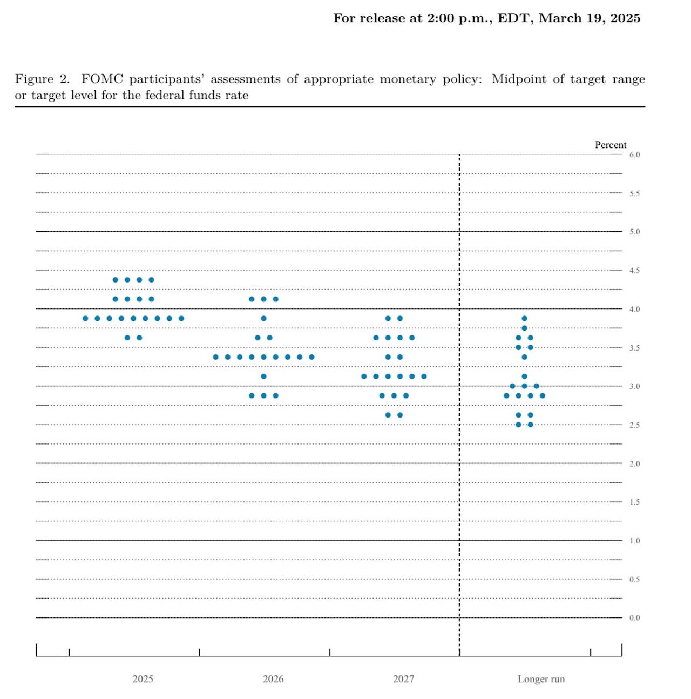

연준 금리 4.5%로 동결: 시장에 위로를 던져준 파월
간밤에 벌어진 3월 FOMC를 통해 연준은 또 미국 기준금리를 4.25% ~ 4.5%로 동결 결정했다. 이번에는 만장일치 결과였다.
이미 이전의 연준 인사들의 발언을 모은 글에서도 정리했지만 동결이 기정사실로 미리 결정되다시피한 회의기도 했다. 세상에 시장 베팅에서 100% 확률이 나온다는 건 쉬운 일이 아니니 말이다.
어쨌든 이번 회의에서 중요한 이슈는 두 가지로 나눌 수 있다.
그래서 2025년 금리 인하는 몇 차례?
올해 금리 인하에 대해 시장의 희망은 침체 우려로 인한 3회를 원하는 것 같았다. 하지만 현실적인 인식은 2회에 가까웠던 듯하다.
그리고 결론이 나왔다. 연준의 생각은 이랬다.
 3월 FOMC 점도표
올해 중으로 50bp 인하, 즉 2025년은 2회 인하가 현재 연준의 입장인 것이다. 나름 무난하게 나왔다. 다만 3회 인하에 손을 든 인사들은 지난 회의 때보다 좀 줄어들었다는 것은 생각해야 할 것 같다.
올해 기준금리 중간값은 3.9%로 나왔다. 꽤나 높다. 하지만 내년 기준금리 중간값은 3.4%, 2027년은 3.1%로 전망은 그래도 하락세를 유지하고 있어서 나쁘게만 볼 필요는 없을 것 같다.
실업률 전망치도 4.3%로 좀 높아졌지만 기존 전망에선 0.1% 오른 수준이라 크게 걱정할 건 아닌 듯하다. 어차피 DOGE가 난리치고 있는 것을 생각하면 실업률이 대폭 오르는 건 정해진 일이기도 한데 이 정도면 선방한 걸 수도 있으니 말이다.
관세로 인한 인플레이션 급등 우려에 일단 연준도 어느 정도 수긍한 듯하다. 아마도 관세를 앞두고 미 기업들의 재료 사재기가 벌어진 건 사실일 확률이 높은 것 같다. 다만 연준은 관세가 인플레이션에 끼칠 영향력은 일시적일 것으로 보는 듯하다. '일시적'이라는 단어가 왠지 신뢰를 떨어뜨리는 것 같은데...
미국이 스태그플레이션이라며?
그냥 경기 침체라면 걱정은 덜했겠지만 스태그플레이션, 즉 경기 침체이면서 물가가 상승하는 최악의 상황이 아닌가 하는 것이 최근 시장의 가장 큰 걱정이기도 했다.
여기에 대해 파월은 확실하게 선을 그어 주었다.
파월: "미국 경제 아직 좋음"
올해 미국의 성장률에 대해 낮아지긴 했지만 그래도 성장하는 것으로 결론은 내 주었다. 최근 있었던 '이번 분기 성장률 예상치가 마이너스로 크게 떨어진 것'에 대해서 걱정하지 않아도 된다는 그런 의미로도 읽을 수 있다.
다만 경기 침체 확률이 높아졌다는 것은 파월도 인정했다. 하지만 아직 침체가 아니라는 것에 우선 집중하는 게 맞을 것 같다.
그밖에
4월 부터 QT 속도를 늦춘다고 한다. 이 조치는 간접적인 금리 인하로 볼 수도 있다. 다만 이에 대해선 반대하는 인사도 있었다. '크리스토퍼'라거나 '월러'라거나...
파월은 금리 인상 가능성에 관해서도 선을 그어 주었다. 인상에 관해 언급하지 않는 식으로 말이다. 따라서 최악의 상황이 오지 않는 한 금리가 인상될 걱정은 안 해도 될 듯하다.
마무리
결론적으로 시장은 이번 조치를 좋게 평가한 듯하다. 일시적으로 단기물 금리가 4% 아래로 떨어지기 까지 했는데 이 말은 채권 수요가 늘었다는 뜻이다. 그런데 주식시장까지 상승했다. 이런 일이 동시에 발생하는 건 흔한 일은 아니다. 이는 비록 금리는 동결 되었지만 QT 속도 둔화에 스태그플레이션 부정 등으로 비둘기 연준으로 해석된 것 때문인 것 같다.
즉 이번 FOMC는 'FED PUT'으로 인식되어 자산시장 전반에서 호의적으로 받아들였다는 의미로 해석 가능할 듯하다.
물론 내일이 되면 또 뒤집힐 수 있다. 해석이 바뀌거나 반박이 나오면서 주가가 뒤집혔던 전례는 많다. 거기다 트럼프의 입이라는 큰 불확실성은 아직 건재하다. 뿐만 아니라 연준의 '관세 인플레이션 영향 일시적'이나 '침체 확률' 입장에 동의하지 않는 경제학자들도 있다.
결론은 당장의 분위기는 즐겨도 될 것 같지만 어쨌든 '조심하자'는 게 적당할 것 같다.